文森特·威廉·梵高
文森特·威廉·梵高（荷兰语：Vincent Willem van Gogh 荷兰语： [ˈvɪnsɛnt ˈʋɪləm vɑn ˈɣɔx] （关于这个音频文件 聆听）;[注 1]，1853年3月30日－1890年7月29日），早年曾译梵高柯[5]，荷兰后印象派画家。他是表现主义的先驱，并深深影响了二十世纪艺术，尤其是野兽派与德国表现主义。梵高的作品，如《星夜》、《向日葵》、《有乌鸦的麦田》等，现已跻身于全球最知名的艺术作品的行列。他在2004年票选最伟大的荷兰人当中，排名第十，次于第九伟大的17世纪画家伦勃朗。
1861年梵高开始接受教育，在学习语言包括法语、德语及英语表现不错，但在1868年3月中断学业，并在1869年7月在国际艺术品交易商公司见习。经历了短暂的工作生涯后，他成为传教士，向贫困的采矿工人传教。直到大约27岁时，梵高才开始了他的画家生涯；然而，在他生前的最后十年间，却创作了2100幅左右的画作，包括约860幅的油画。梵高早期只以灰暗色系进行创作，直到他在巴黎遇见了印象派与新印象派。梵高融入了他们的鲜艳色彩与画风，创造了他独特的个人画风，尤其在梵高待在法国阿尔勒的那段时间，发展已臻成熟。他最著名的作品多半是他在生前最后两年创作的，期间梵高的作品乏人问津，深陷于精神疾病和贫困中，最后导致他在37岁那年自杀。
梵高一生中的核心人物是他的弟弟特奥，特奥从不间断、无私的提供梵高经济资助，二人亦终生保持书信来往。有种说法是梵高生前出售的画作《红色葡萄园》也是由他的弟弟拜托友人购得。
 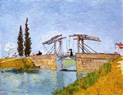
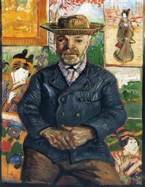
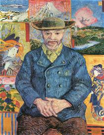
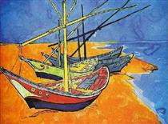
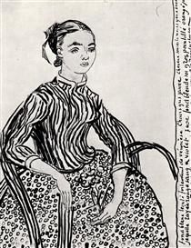
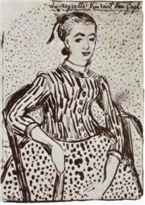
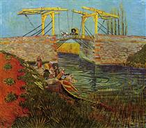
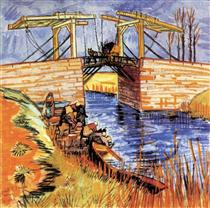
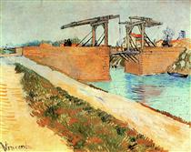
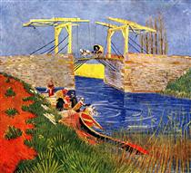
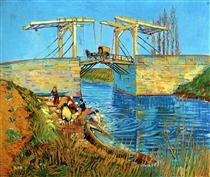
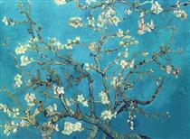
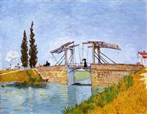
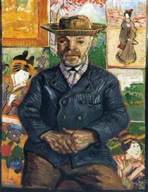
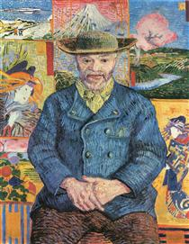
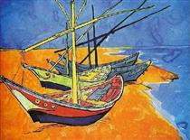
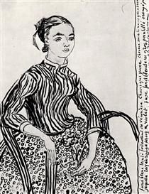
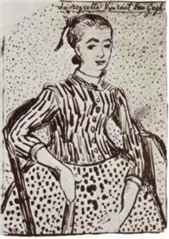
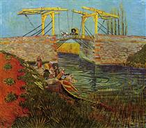
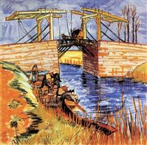
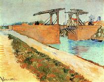
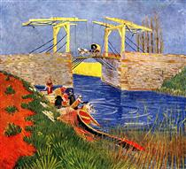
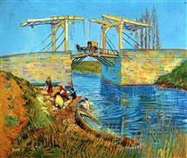
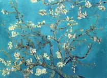